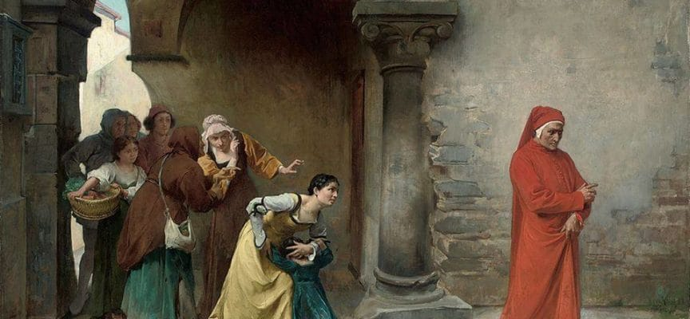
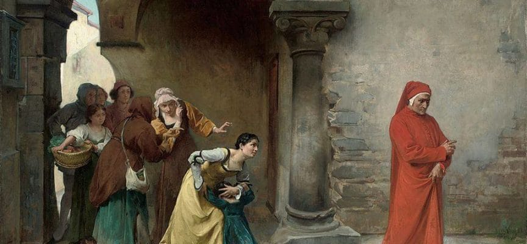

LA VITA

Dante Alighieri nasce a firenze nel maggio del 1265, dal padre Allighiero di Bellincione e dalla madre Bella degli Abati di cui non sappiamo quasi nulla.
Dante fin da giovane partecipa alla vita politica e sociale della sua città, Firenze; Firenze in quel periodo era contesa tra due fazioni, guelfi bianchi (Di cui vi era membro anche Dante) e guelfi neri.
Nel 1299 partecipa alla battaglia di Campaldino.
In seguito conosce Guido Cavalcanti, massimo esponente italiano del Dolce Stil Novo, così Dante inizia a collaborare con esso. Dante inoltre segue gli insegnamenti di Brunetto Latini e studia autori come Virgilio.
Successivamente Dante conosce Beatrice (detta Bice), figlia di Folco Portinari, nata a Firenze nel 1266 e che a diciannove anni sposò Simone dei Bardi, morendo ventiquattrenne nel 1290. Dante racconta di averla conosciuta per la prima volta quando entrambi avevano nove anni e di averla poi rivista a diciotto anni, incontro dal quale era nato il suo amore per lei. Beatrice non è altro che un nome fittizio che significa letteralmente «colei che rende beati». Beatrice è protagonista di molte delle prime poesie stilnoviste di Dante, poi raccolte nella Vita Nuova e nelle Rime. Nel «libello» giovanile la donna non è solo la donna-angelo dello Stilnovo, ma è già raffigurazione di Cristo e sembra anticipare il valore allegorico che avrà nel poema, ovvero quello della grazia divina e della teologia rivelata che sola può condurre l'uomo alla salvezza eterna e al possesso delle tre virtù teologali (fede, speranza, carità). Dopo la sua morte Dante attraversò un momento di «traviamento» morale, che vide l'inizio di studi filosofici (ne parla Dante stesso nel Convivio) e nuove esperienze poetiche, come le Rime petrose. Si è ipotizzato che tale traviamento sia all'origine del peccato rappresentato dalla selva oscura e che si tratti di una colpa di natura intellettuale, ovvero del tentativo di raggiungere le verità teologiche col solo ausilio della ragione e della filosofia umana.
Nel 1277 Dante sposa Gemma Donati, dalla quale avrà tre figli, Iacopo, Pietro e Antonio. Il Rapporto tra Dante e Gemma Donati rimane "Nascosto" e sappiamo ben poco, una cosa che sappiamo è che però Dante non la nominerà mai all'interno delle sue opere. Dante inoltre ha anche un fratello, la cui identità rimane abbastanza "fittizia". In seguito conoscerà Carlo I d'Angiò; nello stesso periodo si iscriverà alla Corporazione dei medici e degli speziali (Una delle sette Arti Maggiori delle corporazioni di arti e mestieri di Firenze).
Nel 1300 Dante raggiunge il culmine della propria vita politica, viene infatti eletto priore (Uno dei supremi magistrati di Firenze). Nel 1301 Dante viene inviato a Roma per "persuadere" Papa Bonifacio VIII (Il quale era desideroso di controllare Firenze). Papa Bonifacio VIII sostenuto dai guelfi neri (I quali sostenevano la supremazia papale) e dal Principe Carlo di Valois (Fratello del Re di Francia) il quale conquista Firenze, destituendo il governo dei guelfi bianchi e richiamando i neri dall'esilio. Nel 1302 Dante si trova ancora fuori Firenze, in questo periodo viene a sapere di essere stato condannato al confino per due anni e a una multa. A suo carico viene mossa l'accusa di baratteria, ovvero di aver fatto un uso illecito di denaro pubblico. Poichè non si presenta a Firenze per discolparsi, i suoi beni vengono sequestrati (Marzo del 1302), dopo essere stato esiliato per sempre da Firenze, viene condannato a morte.
L'esilio allargò l'orizzonte di Dante e gli permise di viaggare e conoscere l'intera penisola, pur rimpiangendo Firenze. Per alcuni mesi viene ospitato da Cangrande della Scala, signore di Verona.
Nel 1305 Firenze estende la condanna anche ai suoi figli, così per sopravvivere deve continuamente chiedere ospitalità ai vari signori dell'italia settentrionale e centrale. Viene accolto a Treviso, poi a Padova, in Lunigiana (Presso i Malaspina).
Nel 1307 e nel 1311 è nel castello di Poppi, ospite del marchese Guido di Battifolle. Tra il 1307 e il 1309 risiede a Lucca, dove scriverà la maggior parte dell'inferno (Concluso nel 1308), e inizierà il Purgatorio.
Nel 1310 scende in Italia Enrico VII di Lussemburgo, il quale intendeva ripristinare la fedeltà all'imperatore in Italia. Dante avviserà Enrico dicendo che il nemico è Firenze, e quest'ultima reagirà bandendolo per sempre dalle sue terre. Nel 1312 a Verona, Dante conclude il Purgatorio. Nel 1315 Dante ha la possibilità di tornare a Firenze, ma rifiuta.
Nel 1315 vengono condannati a morte i suoi figli. In seguito si stabilì a Ravenna con la moglie e con i figli, qui si dedicherà all'insegnamento. Morirà il 14 settembre 1321, all'Età di 56 anni, mentre tornava da Venezia.


 
